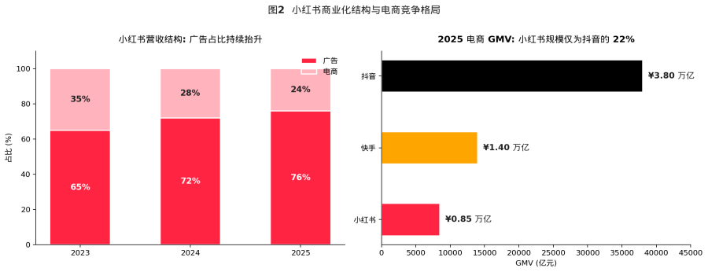
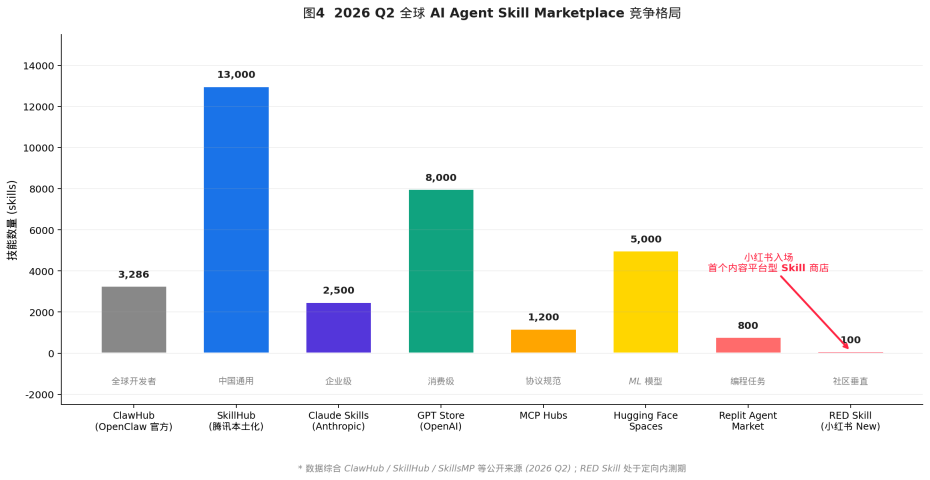
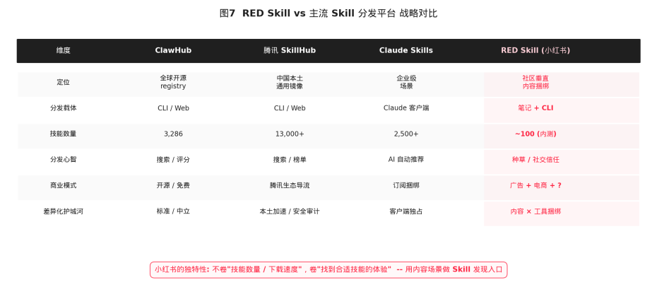

图 1 小红书 2023–2025 年核心业务指标 (来源：彭博 / 公开报道整理)
摘要：一次值得分析的产品级动作
2026 年 5 月下旬，距离港股市场期待已久的小红书 IPO 越来越近的窗口期里，小红书做了一个表面上几乎毫无声响、本质上意义重大的动作。
在创作者侧定向内测一款名为「RED Skill」新的组件功能。没有发布会、没有海报、没有 KOL 矩阵式刷屏；所有的安装都通过终端里一行 curl 完成。
我们拿到了 RED Skill 的初版工具包 redskill-kit-0.1.0 并对其完整代码做了逐行审阅，叠加目前可在公网检索到的内测细节、社区生态信号以及小红书自身的业务面，本文章回答了四个问题：
第一，RED Skill 在技术上究竟是什么？它和我们已经熟知的 ClawHub、腾讯 SkillHub、Claude Skills、GPT Store 之间是何种关系？
第二，小红书选择在当下推出 RED Skill，背后是什么样的战略时点判断？
第三，它能为小红书的内容生态、商业化路径、估值故事分别贡献多少新的增长杠杆？
第四，作为投资人，应当在什么样的关键指标上盯紧它的演进？
先说结论：RED Skill 是小红书第一次在产品层面把「内容」和「AI 生产力工具」做了绑定。它的代码风格、API 设计，呈现出一种极其克制的判断，小红书并不打算下场去和 OpenAI、Anthropic 卷模型本身，也不打算和腾讯 SkillHub 在通用技能镜像速度上硬拼，而是希望用自己最稀缺的资产（一亿+ 创作者、社交、近 70% 的搜索渗透率），切下一个全新的细分赛道：以社区场景为单位的 AI Skill 发现与分发。
我们认为，这是一个非常符合小红书过去十年「在克制中长跑」战略动作，也是其在 IPO 估值故事里值得加分的一笔。
但能否真正跑通，仍然取决于三个变量：创作者能否把「Skill 上传」纳入日常发布动作；垂类场景，如电商商家是否会主动接入它做经营自动化；以及 B 站、知乎等同类社区平台会不会在 一个季度内跟进，把 AI Skill 分发推向白热化竞争。

图 2 小红书商业化结构与电商竞争格局 (来源：彭博 / CBNData / 虎嗅)
第一章 代码视角：RED Skill 到底是什么？
在讨论商业策略之前，我们先从工程视角把 RED Skill 这件事拆透。这一节会稍微技术一些，不感兴趣的朋友可以先跳过。
1.1 三层架构：CLI + Skill + Plugin
redskill-kit-0.1.0 的目录结构非常工整，整个工具包由三个相互独立、又彼此关联的部分组成：
•CLI 层（Python）：一个名为 redskill 的命令行工具，提供 install / search / list / uninstall / upgrade / self-upgrade 六个子命令。它运行在用户本机，是开发者和 AI Agent 与小红书技能仓库交互的唯一入口。
•Skill 层（Markdown）：两个 SKILL.md 文件（find-redskills 和 redskill-preference），遵循 Anthropic 在 2025 年 12 月开源的 Agent Skills 规范。它们被部署到 OpenClaw 工作区，由 AI Agent 在对话过程中根据用户意图调用。
•Plugin 层（TypeScript）：一个挂在 OpenClaw before_prompt_build 钩子上的 TypeScript 插件，它会在每一次 prompt 构建之前检查触发词，命中后把 RED Skill 的检索策略注入到系统消息中，引导 AI Agent 优先走 redskill 仓库。

图 3 RED Skill 三层技术架构（代码级拆解）
1.2 后端：直接挂在「creator」域名下的内部网关
RED Skill 的所有后端调用都指向 edith.xiaohongshu.com，这是小红书内部多年沉淀下来的统一网关域名。三个核心 API 路径如下：
/api/sns/v1/creator/red\_skill/get\_skill\_bundle |
路径中 creator 这个目录非常关键。它意味着小红书内部把 RED Skill 明确定位在「创作者侧产品」之下，与商家工具、营销工具同级。从组织架构上就指向了「服务创作者经营效率」而不是「平台基础设施」。
1.3 一个有趣的小细节：与「腾讯 skillhub」的隔空对话
install.sh 脚本顶部有一段被刻意写出来的注释，说明它的命令行设计风格与「Tencent skillhub」不同。这一行注释，把小红书团队对腾讯 SkillHub 的态度暴露得很清楚。
第二章 为什么是 2026 年 5 月？

图 6 RED Skill 出现的战略时点：估值飙升 + AI Agent 标准就位
时间回到小红书自己的资本曲线上。根据公开报道，小红书的估值在 2025 年 3 月被金沙江创投的投资组合文件标注为 260 亿美元，6 月上调至 310 亿美元，并在 2026 年 2 月的老股转让中飙升到约 500 亿美元，14 个月内估值乘数 1.92 倍。市场普遍预期它将在 2026 年内启动港股 IPO。
在这样的时间窗口里推出 RED Skill，无论是出于估值故事的考量，还是出于 IPO 路演时的叙事补强，都极其合理。
它给了二级市场一个完美的「小红书不只是流量公司、它还是 AI 时代的入口公司」的标签。
在中国互联网公司里，能讲清楚自己在 AI 浪潮中具体扮演什么角色的资产并不多，RED Skill 让小红书的 AI 故事第一次有了一个具体的产品载体。
第三章 RED Skill 在全球版图中的坐标
要理解 RED Skill 的差异化价值，必须先把视角拉到全球 AI Agent Skill Marketplace 这个宏观赛道。截至 2026 年第二季度，全球已经形成了至少 8 个有相当影响力的 Skill 分发平台，每一个都有自己独特的定位与经济模型。

图 4 2026 Q2 全球 AI Agent Skill Marketplace 竞争格局
3.1 已经形成的三大梯队
从技能数量、活跃开发者、商业模式三个维度来看，目前的市场可以分为三层：
•第一梯队— 通用基础设施：腾讯 SkillHub（1.3 万 skills）、ClawHub（3286 skills）、GPT Store（约 8 千 skills），它们的角色是 “AI 技能的应用商店操作系统”。
•第二梯队— 企业级垂直：Claude Skills、SkillsMP、LangChain Hub 主打企业流程类技能，强调安全审计、版本治理、组织权限。
•第三梯队— 场景化新势力：Hugging Face Spaces 偏 ML 模型分发、Replit Agent Market 偏编程任务、Cloudflare AI Marketplace 偏边缘推理，每一家都在挖自己的差异化场景。
RED Skill 进入的并不是这三个梯队里的任何一个，它定义了一个全新的细分赛道：内容平台原生的 Skill 分发系统。它的核心差异并不是技能数量（内测期只有约 100 个），也不是镜像速度（小红书没有腾讯云的 CDN 优势），而是「在哪里发现技能」这件事本身。
3.2 关键差异：分发心智的根本不同
ClawHub 的分发心智是「搜索 + 评分」，腾讯 SkillHub 是「搜索 + 编辑精选榜单」，Claude Skills 是「AI 根据上下文自动推荐」。这些都假设了一件事：用户已经知道自己需要技能，然后到一个商店里去找。
RED Skill 把这个前提颠覆了。在小红书的场景里，用户并不是”先有需求、后去技能商店搜”，而是”先看到一篇如何用 AI 一周涨粉的笔记，然后顺手把这篇笔记里挂载的技能装上自己的 Agent”。也就是说，Skill 是被嵌入到内容的语境里被消费的。
这种模式的本质，是把小红书过去十年最值钱的资产，社区信任平移到 AI 工具消费场景。
一个普通用户对 “OpenClaw 官方仓库里的工具好不好用” 是没有判断能力的，但是当 ta 看到自己关注了两年的博主写了一篇详细教程，并且评论区有几十个人晒出 “用这个 Skill 真的两小时写完了一份选题表” 的反馈时，决策成本会急剧下降。

图 7 RED Skill vs 主流 Skill 分发平台 战略对比
3.3 谁会跟进？B 站、知乎的可能动作
RED Skill 一旦在内测期跑出标杆案例，最有可能在 1–3 个月内做出对标动作的是 B 站和知乎。
B 站的优势在于：根据其 2025 年财报，平台上有 1.2 亿月活用户消费 AI 内容，2025 年 Q4 AI 内容时长同比增长 53%，2026 年 Q1 AI 相关广告收入增长 170%。
B 站的 UP 主社群里，长期活跃着大量做模型测评、Agent 工作流、Skill 配置教程的内容生产者，社区氛围里已经形成了「评论区求链接」「视频简介挂安装命令」的天然 Skill 分发雏形。
知乎的优势在于专业问答的强语义场景。一个典型的知乎用户 “在 PySpark 大数据流水线中如何用 AI 自动生成 ETL 脚本” 类型的提问，本身就是一个完美的 Skill 检索 query。
如果知乎在回答页下方挂上「相关 AI Skill」推荐位，分发效率可能比纯搜索更高。
但这两家如果跟进，节奏上几乎都会落后 RED Skill 至少一个完整产品迭代周期。第一个吃螃蟹的人在用户教育、创作者激励、技能存量积累上将拥有显著先发优势。
第四章 RED Skill 怎么帮小红书赚钱？
讨论商业模式之前，先看一下小红书的财务面。根据公开报道与 36Kr / 虎嗅 / 彭博等媒体的交叉验证：
•2024 年总营收 300 亿元，广告占 72%（约 216 亿元，同比 +48%），电商 GMV 约 4000 亿元。
•2025 年总营收 420 亿元（同比 +40%），广告占比 76%（约 320 亿元），电商 GMV 突破 8500 亿元；净利润预计 30 亿美元。
•2025 年 8 月，小红书内部组建「大商业板块」，由 COO 柯南担任总负责人，电商板块首次提升至一级入口。
这是一家典型的「广告强、电商在补」的内容公司。在这个结构下，RED Skill 至少可以服务两条货币化路径。

图 8 RED Skill 货币化的两条假设路径
4.1 路径一：高净值 AI 用户群的广告溢价
RED Skill 让创作者可以在笔记下挂载 Skill。这件事看似只是用户体验的优化，实际上为广告系统提供了一个全新的高质量「人群标签」，一个会在笔记下点击安装 Skill 的用户，几乎一定是 AI 工具的早期使用者，是典型的高 LTV 群体。
这群人对 SaaS、企业服务、开发者工具、AI 硬件的付费意愿与单 ARPU 都远高于普通信息流用户。当小红书把这一群人筛出来作为定向广告位的人群包，理论上单点击 / 千次曝光价格可以做到比常规笔记广告显著更高的溢价。
这是一个 “用产品功能开辟新广告库存” 的经典动作，过去抖音用电商挂载、淘宝用直播间挂宝贝都做过类似事情，只是这一次承载的是「AI 工具」消费场景。
4.2 路径二：商家 Agent 与电商 GMV 抽佣
更具想象空间的是第二条路径：把 RED Skill 接到约 800 万小红书商家的经营自动化场景。
根据小红书 2025 年的电商动作，「百万免佣计划」让前 100 万元支付交易额免佣，是一个明确的低门槛拉商家进场的姿态。但商家进场之后，能否做大单店 GMV，取决于 ta 的运营能力，而这正是 AI Agent 可以大幅提升的环节：
•选品 Agent：基于站内搜索 / 笔记爆文趋势的选品 Skill。
•写文 Agent：自动生成种草笔记 + 千人千面变体的 Skill。
•客服 Agent：根据店铺 SOP 自动回复私信的 Skill。
•投流 Agent：根据 ROI 自动调整薯条出价的 Skill。
这些 Skill 一旦标准化、做成小红书官方背书的版本，商家就具备了 “装上即用” 的经营自动化能力。
商家经营效率的提升会直接体现为：
（1）单店 GMV 上升 → 平台 take rate 收入上升；
（2）商家活跃度上升 → 广告 / 直播 / 薯条 ROI 上升；
（3）平台向中小商家提供 SaaS 化能力 → 可能开启全新的订阅 / 软件费收入科目。
这一切并不需要小红书自己去训练模型，它只需要做一件事：用 RED Skill 把市场上最好的 AI 能力按场景策展进来。这是一个非常高杠杆的位置，把别人的算力变成自己的护城河。

图 5 RED Skill 嵌入小红书内容飞轮的杠杆点
图 6 笔者发布的 red skills，既有创作供给相关的，也有娱乐向的
4.3 一个未被广泛讨论的可能性：开发者订阅
代码里 metadata.json 已经预留了一个值得注意的字段 skills_search_url，它和 Anthropic / OpenAI 提供给开发者的「分成 / 订阅 / 标签计费」是同构的。
这意味着 RED Skill 的后端架构其实已经为「付费 Skill」预留了入口。 一旦平台心智成型、创作者积累足够多的优质 Skill 后，小红书完全可以在开启 Skill 订阅功能，让头部开发者从他们的技能里直接获得分成收入。
这一步可能会把小红书的收入结构扩展到「广告 + 电商 + 开发者经济」的三元。
第五章 值得在内测期就密切关注的变量
接下来这一节，我们尝试用一个「潜力× 不确定性」的二维矩阵，把 RED Skill 落地过程中最关键的变量摆出来。
图 9 RED Skill 战略事件 风险/机会矩阵
5.1 风险一：社区氛围与商业化稀释
小红书最核心的护城河，是社区里「真实分享」的氛围。一旦 Skill 挂载机制被过度商业化，比如出现大量「装这个 Skill 的笔记其实是软广」的情况，社区信任的稀释会传染到所有其他品类。CBNData 在 2025 年的报告里曾经指出：小红书最大的悖论是 “社区越商业化，用户的真实感就越被稀释”。
5.2 风险二：开发者激励不足
内测期靠定向邀请的 AI 创作者维持热度可以做得很漂亮，但要把生态长出来，必须解决「为什么一个开发者愿意花一周时间写一个开源的 RED Skill」这个核心问题。
这背后藏着一个比表面看上去更尖锐的结构性矛盾，我们姑且称之为「Skill 的贪吃蛇困境」。
先想一个问题：抖音上为什么人人都跳同一首歌的舞，还能各自出圈？ 因为每一支舞都是独特的，同样的副歌、同样的卡点，叠加上每个人的肢体、表情、情绪、生活背景之后，作品就有了独属于这个人的签名。创作者的价值之所以能够被「看到」，是因为不论 ta 是为名、为人、还是为钱，那一周的劳动都能在最终作品里留下一个不可替代的烙印。这是所有 UGC 内容平台繁荣的最根本动力：人是独特的，于是 ta 的作品就是独特的。
但 Skill 不是舞蹈，Skill 是贪吃蛇。 两个功能完全一样的「自动生成小红书爆款标题」的 Skill 之间，并不会因为开发者的性格不同而产生消费者愿意感知的差异。第二个出来的版本一旦比第一个晚发布一周、安装量少一个数量级，它的存在价值就近乎归零，这是软件功能型产品与生俱来的「赢家通吃」属性。一个开发者花一周时间写出来的不是「我的舞蹈」，而是「一段任何人都可以平替的代码」。如果激励机制不对，他下一周就不会再写第二个。
这就是为什么开源软件世界历来需要 GitHub Star、issue 讨论，只有当一段代码被绑定到一个人格、一个故事之后，「功能可被复刻」这件事才会被相对削弱，作者的劳动价值才有机会被看到。ClawHub 用社区荣誉机制 + GitHub Star 心智把这件事大体跑通了，OpenAI 则在 GPT Store 用真金白银的直接补贴绕过了这个问题。
RED Skill 目前的位置介于两者之间，但它握着一个其他平台都没有的独特资产，小红书本身就是一台把「内容创作者→ 粉丝 → 消费者」链条做到极致的人格化引擎。 如果它愿意把这台引擎反向接到 Skill 分发上，让一个 Skill 的安装数、调用次数、用户在笔记里晒出的口碑反馈，能够反向变成这个开发者笔记的流量、粉丝增长、商业合作机会，那么 RED Skill 就有可能创造一种全新的开发者激励范式：Skill 不再只是开发者写过的某一段代码，而是某场景下解决方案的体现。 这是任何技术中心化、纯仓库式的 Skill 商店（包括腾讯 SkillHub 和 ClawHub）都给不了的。
平台的「贪吃蛇困境」：存量看上去不少，但每一条蛇都长得差不多，谁也没有动力再多写一条。
5.3 风险三：竞争窗口收窄
如果腾讯 SkillHub 选择直接复制 “在内容平台挂载 Skill” 的模式，它可以借微信视频号、公众号的庞大流量做同样动作；字节系也完全可以让抖音 / 头条做对标产品。RED Skill 目前的领先窗口里能不能把内测扩展到全量、能不能跑出一两个标杆爆款 Skill、能不能完成对 Top100 AI 创作者的捆绑，还是个未知数。
同时作为小红书的创作者，我真心建议大家不要盯着效率类，多看看情绪类，比如上图作者的“渣男识别”、“女友翻译”。
最后给我们打个广告，Mana(https://mana.am) 正在内测中，欢迎你的关注。
免责声明：本报告的所有商业判断与估值假设均为基于公开信息的研究性分析，不构成任何投资建议。
本文同步自微信公众号，点击查看原文